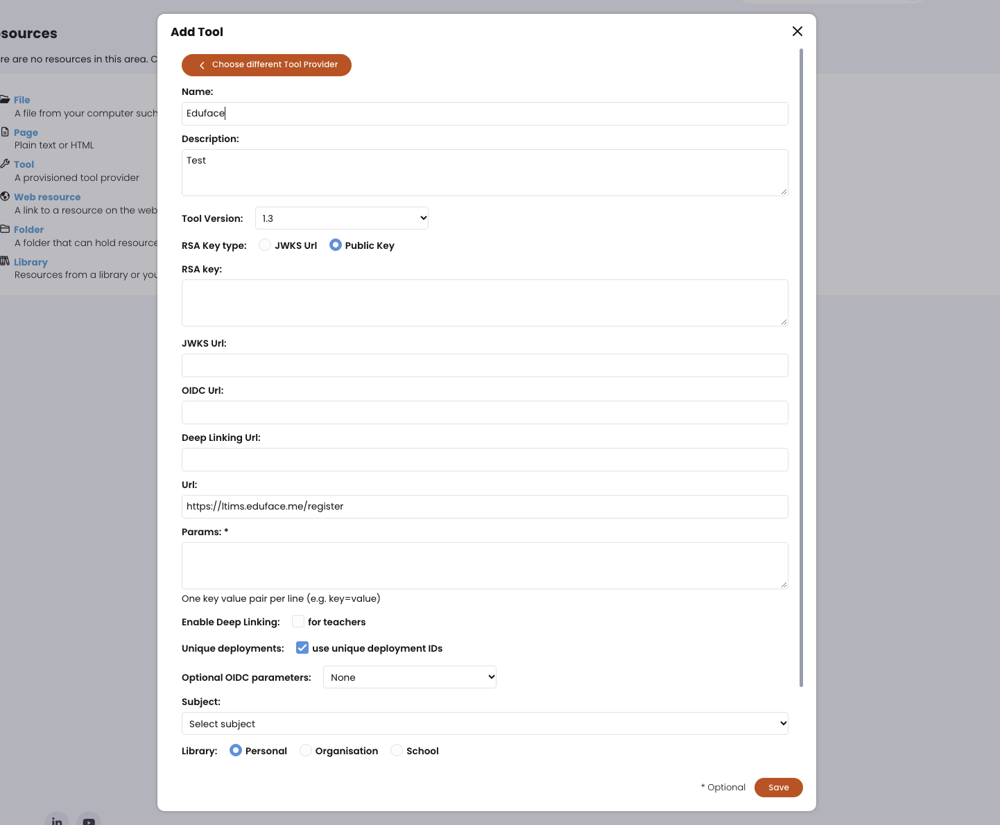

Je vult één keer een formulier in itslearning in. Hieronder staat per veld wat erin moet. Waar een waarde staat, klik je op Kopieer en plak je hem in het veld. Duurt ongeveer vijf minuten.
Open je cursus in itslearning, ga naar Resources, klik op Add en kies Tool. Dan zie je het scherm hieronder. De nummers horen bij de lijst eronder; klik op een nummer om naar dat veld te springen.

Voorbeeldscherm. Bij jou kunnen de velden nog leeg zijn.
Hier komt wat je na het opslaan moet doen, bijvoorbeeld welke gegevens itslearning laat zien en naar wie je die stuurt.